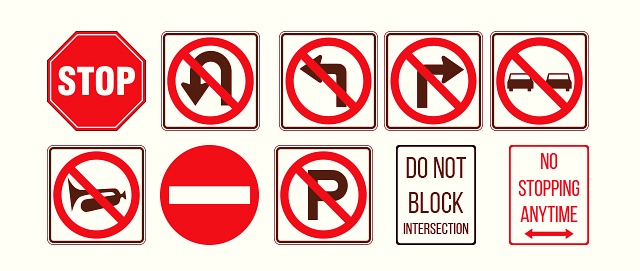

5 Most Common Regulatory Street Signs
Street signs are supposed to make a place more easily recognizable. But some of the signs we see have a far more questionable purpose. Take, for example, the signs that warn of “No parking on holidays.” Sure, this should be common sense, yet it’s a sign that some rural areas still use it. Why? So that people can park on their own holidays.
Other drivers argue that regulatory road signs are made just to irritate them — perhaps to slow down their vehicles, or to stop them from making right turns on a red light. Nevertheless, regardless of what you believe about regulatory road signs, they have all been put in place for your safety, and to regulate traffic.
What are regulatory road signs?
Some government road signs are used for the protection of personal property, for instance, one that states Private Drive - No U-turn. This type of sign lets other drivers in your neighbourhood know that a roadway or driveway is private property and is not open to traffic that wishes to reverse direction. Roofers usually have great reasons to resolve their problems in specific areas near their homes. This specifically occurs if they desire to maintain the safety of their family members, or they want to avoid having their vehicles' drives consistently damaged by repetitive turning around.
Another very famous regulatory indicator is the Private Property sign, which reads that this is your private property, and anybody is allowed entry as long as they are not trespassing.The homeowner issues a warning sign, making it absolutely clear that an area with the property is not a part of the public domain. For this reason, trespassers are penalised if they intrude on private property.
The homeowner places a sign on his property, making it unambiguous that a portion of it is considered a protected domain where trespassers do not belong. Because of this, trespassers are penalised if they enter any private property that is protected by a sign such as this one.

What are the most common types of regulatory road signs?
After a driver sees a sign above a post or adjacent surface, they need to know you must obey the sign's commands. You will be in violation of your state's traffic regulations in case your actions disregard the sign's requirements.
There are various extremely commonplace traffic signs in nearly every road. This, however, doesn't mean that you shouldn't be mindful to only check out them at every given opportunity.It's crucial to remember this is not mere silliness, but a serious security warning that should keep you safe on the road.
Here are the five most common types of regulatory signs that motorists will generally see on any roadway:
- Stop sign - Whenever you're at a Stop sign, you have to come to a complete stop on a road or along a crosswalk that is marked by a line. If you do not have one of these, you'll still need to stop before passing the intersection.
- Yield sign - When you see a Yield sign, you must slow down your vehicle when witnessing pedestrians or other motorists and return the favor should any vehicles be located in the cross-traffic path. You must then pass through an intersection when it's safe to continue.
- Speed Limit signs - These signs will clearly indicate to you what is the speed limit on this stretch of the road that you're driving on. Note that the speed limit can change quickly, even less than a mile ahead, so be aware that the speed limit can and will change at any moment.
- Wrong-Way sign - This sign generally appears at the side of the road when you are about to enter a lane where traffic comes from an oncoming direction. When you see one of these signs, you should pull to the side of the road and turn around when it's safe to do so.
- Do Not Enter signs - They should show traffic lights indicating you need to change lanes, and you should never force your vehicle through the intersection in spite of these signs, because it could be possible that traffic is coming from the other direction.
Conclusion
In conclusion, regulatory street signs are used to enhance the safety of the public and pedestrians. These signs are also designed to protect the environment. They are also used to protect the property of private entities as well. In some cases, regulatory street signs are used to warn or alert people of potential hazards.